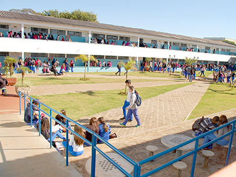

Ensino Médio
O Ensino Médio do Colégio Barbosa Ferraz é a etapa final da educação básica e prepara os alunos tanto para o ingresso no ensino superior quanto para o mundo do trabalho. Nosso compromisso é desenvolver cidadãos críticos, criativos e conscientes do seu papel na sociedade.
A grade curricular contempla as disciplinas obrigatórias da Base Nacional Comum Curricular (BNCC), além de componentes diversificados que ampliam o repertório dos estudantes, como projetos interdisciplinares, feiras de ciências, simulações acadêmicas e ações sociais.
Contamos com professores experientes e qualificados, que utilizam metodologias ativas e recursos tecnológicos para tornar as aulas mais dinâmicas e interativas. Além disso, oferecemos orientação vocacional e preparação para o ENEM e vestibulares com simulados e aulões temáticos.
 Voltar à Página Inicial